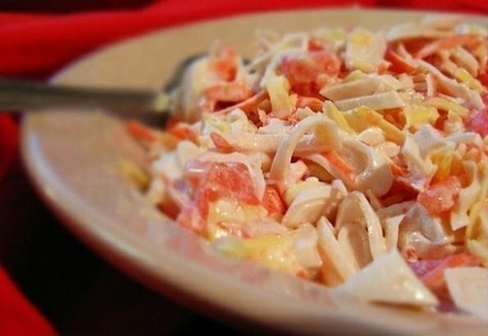
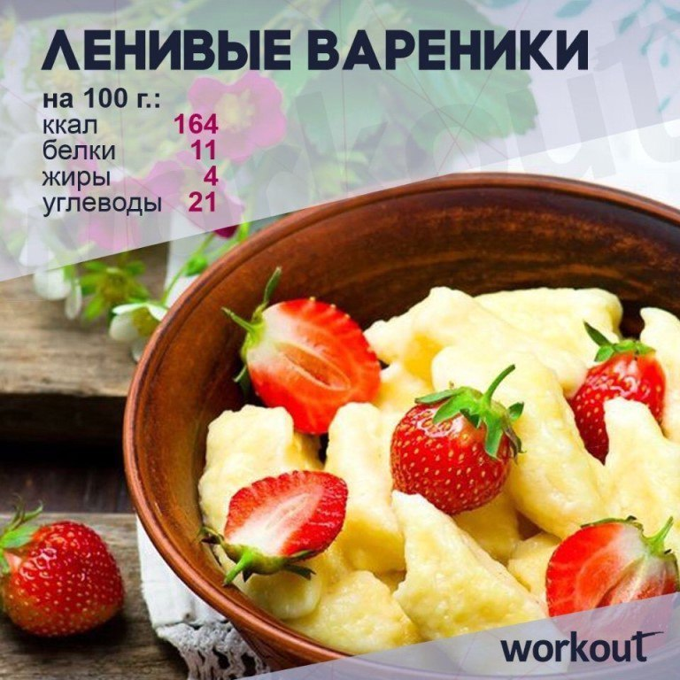
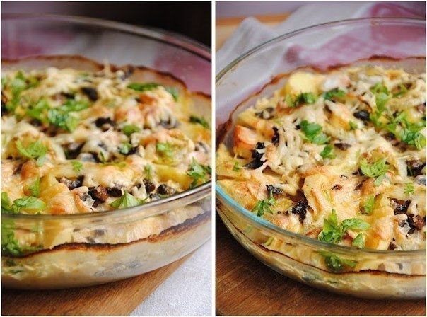
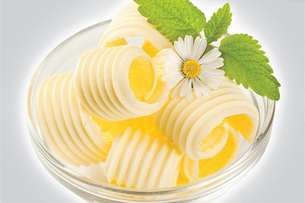
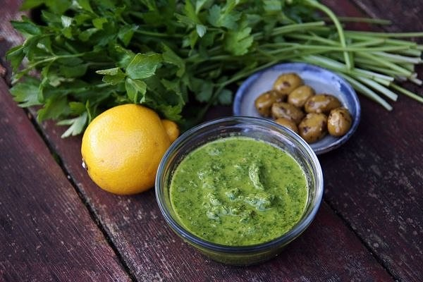

Два литра воды в день обязательно !!!
Понедельник : нужно есть любые фрукты , выпить молока полтора литра .
Вторник : съесть творога 500 гр. ,выпить кефира полтора литра , один литр любого сока, за исключением виноградного и бананового.
Четверг : выпить минеральной воды один литр. без газа, кефира полтора литра , съесть в любом количестве овощной салат без масла. ...
Читать полностью...
на 100грамм - 115.28
ккалБ/Ж/У - 16.17/4.96/2.49Ингредиенты:
кальмары — 250−300 г
помидоры — 1−2 шт.
сыр нежирный — 100−200 г
чеснок — 1 зубчик

йогуртПриготовление:
1. Кальмары очистить и отварить в подсоленной воде 1-2 минуты. Порезать соломкой. ...
Читать полностью...
Ингредиенты:

Клубника — 200 г
Творог обезжиренный — 250 г
Яйцо — 1 шт.
Оливковое масло — 1 ст. л
Мука овсяная — 1 стак.
Кокосовая стружка — для украшения
Подсластитель — по вкусу
Приготовление:
...
Читать полностью...
на 100грамм - 85.6 ккалБ/Ж/У - 12.67/2.11/4.41
Ингредиенты:

Грудка куриная 2 штуки
Картофель 4 штуки
Шампиньоны 10 штук
Сыр 17% 100 г
Лук 1 штука
Молоко ½ стакана
Соль, перец черный молотый по вкусу ...
Читать полностью...

Ученые пришли к шокирующему выводу: от жирной еды не полнеешь. Причина лишнего веса — с виду полезные углеводы: овсянка, фруктовые йогурты со злаками, картошка. Теперь обезжиренные молоко и творог — это плохо, а сливочное масло и сало — хорошо. 70% — таков процент жиров в рационе у тех, кто придерживается кетодиеты.
Читать полностью...

Даже в домашнем майонезе – 400 ккал на 100 г. Однако это не единственный соус, известный человечеству. Для 1,5 ст. полезного итальянского соуса потребуется 1,5 ст. петрушки, 2/3 ст. оливкового масла, 0,25 ст. каперсов, 3 анчоуса, 1 ст.л. винного уксуса, 1 ст.л. лимонного сока, 2 зубчика чеснока, 0,5 ч.л. лимонной цедры. Ингредиенты взбейте в блендере до однородного состояния, приправьте солью и перцем. Соус хорош к рыбе, курице, мясу, овощам.
Читать полностью...